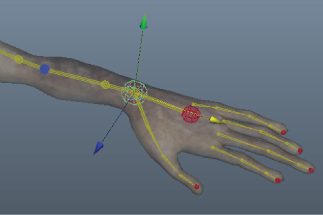
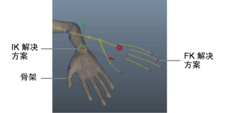

通过“HumanIK 控制”(HumanIK Controls)中的“IK 融合平移”(IK Blend T)和“IK 融合旋转”(IK Blend R)（以前称为“达到”(Reach)）滑块，可以确定骨架遵循哪一个解决方案（IK 或 FK）。
在控制装备上设置关键帧时，IK 和 FK 解决方案均设置关键帧。默认情况下，“对齐/同步控制装备”(Align/Synchronize Control Rig)功能会同步控制装备，从而导致 IK 和 FK 解决方案在场景中显示在彼此的顶部。

IK 和 FK 解决方案的插值不匹配，因为 IK 效应器是全局的，而 FK 效应器在层次的局部范围内有效。您可以通过禁用“对齐控制装备”(Align Control Rig)选项（ >“编辑控制装备 > 对齐/同步控制装备”(Edit Control Rig > Align/Synchronize Control Rig)）来可视化这一点。
>“编辑控制装备 > 对齐/同步控制装备”(Edit Control Rig > Align/Synchronize Control Rig)）来可视化这一点。

在禁用“对齐/同步控制绑定”(Align/Synchronize Control Rig)的情况下，为控制绑定设置关键帧会产生不同步的结果，并且为 IK 融合设置关键帧没有通常的效果。
注： 您还可以通过单击“控制”(Controls)选项卡工具栏中的“选择”(Selection)模式图标 来可视化这种不同步的插值。但是，请记住，在为控制装备设置关键帧之前返回到“全身”(Full Body)或“身体部位”(Body Part)模式。